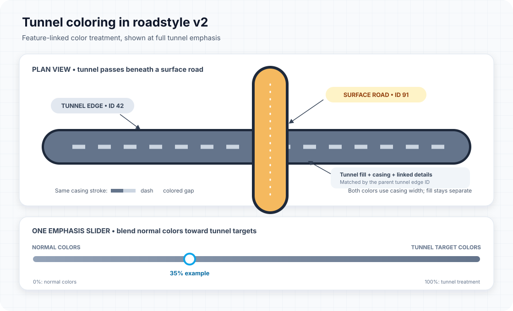

Roadstyle v2 • Visual guide
Tunnel coloring
The Monaco dashboard keeps each road's normal colors as its baseline, then applies a tunnel-specific color treatment to the tunnel and features linked to its edge ID.

Two separate controls
At 0%, the casing returns to a normal single-color dash with a transparent gap. At 100%, the tunnel target colors are used fully. Values between the endpoints blend continuously.
What the casing is
The road fill is the broad stroke painting the pavement. The casing is a separate, narrower boundary stroke that follows the road's casing geometry and lateral offset. It is not another road fill, nor a second line painted into the space between roads.
The selected dash and gap colors alternate along the same casing stroke. Both colors use the existing casing width. The gap color replaces the casing stroke's normally transparent dash gap; it does not color the road interior. Changing the casing palette changes color only, not casing geometry or width.
The tunnel fill, tunnel casing, and surface road crossing are separate rendered features. The color controls style the tunnel-related features without turning the casing into a second fill.
Color calculation
For each RGB channel, the dashboard blends the feature's normal color with its tunnel target:
strength ranges from 0 to 1. For example, 35% keeps 65% of the normal color and blends in 35% of the tunnel target. The fill, casing, label, arrow, and marking each have their own target colors.
| Feature | Normal/start | Tunnel target |
|---|---|---|
| Road fill | Per-edge fill_color | #64748b |
| Casing dash | #94a3b8 | First selected palette color |
| Casing gap | #e2e8f0 map background | Second selected palette color |
| Channel casing | #94a3b8 | #64748b |
| Street names | #f1f5f9 with dark halo | #0284c7 with teal halo #164e63 |
| Markings and glyph text | Feature color, white fallback | #a5f3fc |
| Direction arrows | #ffffff | #a5f3fc |
Casing palettes
| Choice | Dash | Colored gap |
|---|---|---|
| Slate + ice | #64748b | #cbd5e1 |
| Blue + cyan | #315b7d | #a9d7e8 |
| Warm + sand | #806d64 | #e7c9a7 |
How edge association works
The dashboard collects string-normalized edge_id values from tunnel features. A detail is treated as tunnel-related if it has tunnel: true itself or its edge_id matches a tunnel edge. This allows linked casing, channels, markings, labels, and arrows to follow their parent tunnel even when the overlay feature does not repeat the tunnel flag.
Keep the parent tunnel's edge_id on edge-linked details. Unlinked annotations cannot be reliably assigned to a tunnel.
Why the casing pattern is custom
MapLibre's ordinary line-dasharray has one line color; its gaps are transparent. It has no native second color for the gap. Above 0% emphasis, the dashboard creates one small repeating image with the dash color followed by the gap color, then applies it as line-pattern to the existing tunnel casing stroke. It clears line-dasharray while that pattern is active, so the casing is not dashed twice or drawn as a second stroke.
At 0%, the pattern is removed and normal line-dasharray is restored. Only tunnel casing uses this pattern; surface casing and road fill are not recolored by the casing palette.
Crossings: color is not draw order
Tunnel and surface geometry remain separate features, with their normal levels and edge IDs. The color treatment makes the tunnel easier to recognize; it does not decide which road is above another. Correct crossing display still depends on the network's topology, stacking metadata, and compiled layer order.